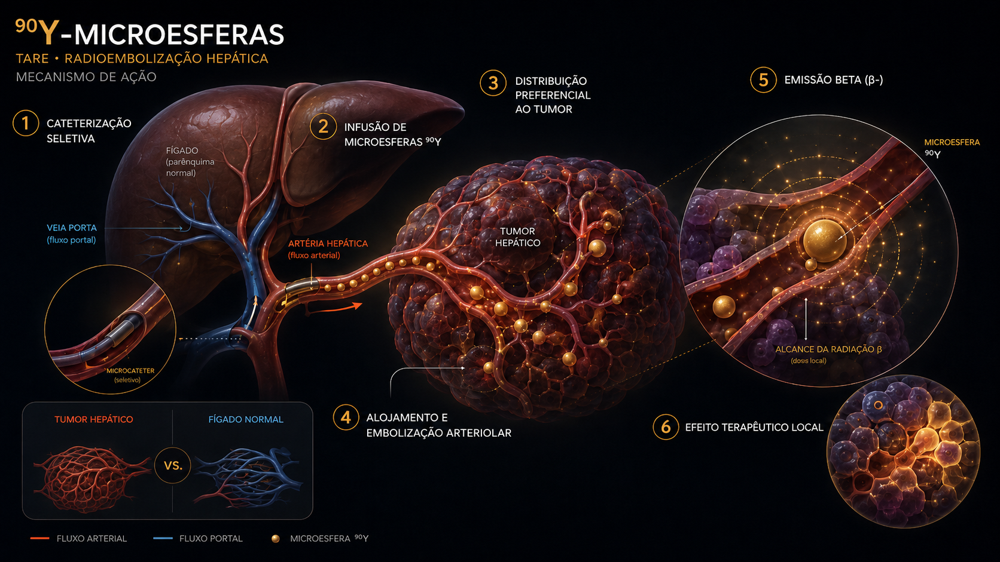

01 Cronologia
Da observação anatômica de Breedis & Young (1954) à dosimetria personalizada do DOSISPHERE-01: 70 anos para sair de tratamento empírico para terapia individualizada.
Tumores hepáticos têm suprimento arterial preferencial
Breedis e Young demonstram em estudos anatômicos que tumores hepáticos primários e metastáticos recebem >80% do fluxo sanguíneo da artéria hepática, enquanto o parênquima normal é nutrido majoritariamente pela veia porta. Base conceitual de toda terapia transarterial.
Primeiros estudos com 90Y
Tentativas iniciais usando partículas de 90Y para tumores hepáticos. Tecnologia ainda imatura: distribuição imprevisível e dosimetria primitiva. Importância simbólica.
Desenvolvimento de microesferas modernas
Burton, Gray e cols. (Austrália) desenvolvem microesferas de resina com 90Y (que se tornariam SIR-Spheres). Em paralelo, MDS Nordion (Canadá) desenvolve microesferas de vidro (TheraSphere), com diâmetro padronizado e atividade incorporada na matriz.
Aprovações regulatórias
SIR-Spheres recebe aprovação FDA via PMA (2002) para metástases hepáticas de CCR. TheraSphere recebe aprovação HDE (Humanitarian Device Exemption) para CHC. Inicia-se uso clínico ampliado.
SARAH e SIRveNIB · primeiro fase 3 em CHC
Vilgrain (SARAH, França) e Chow (SIRveNIB, Ásia): comparação direta com sorafenib em CHC avançado. Endpoint primário de OS não atingido. Lição: TARE não substituiu sorafenib globalmente, mas mantém papel em subgrupos selecionados.
DOSISPHERE-01 · dose personalizada (Lancet Gastro Hep)
Garin e cols.: dosimetria personalizada (≥205 Gy ao tumor) vs convencional (120 Gy lobar). ORR 71 vs 36%, OS 26,6 vs 10,7 m. Mudou o paradigma: dose personalizada é mandatória sempre que possível.
LEGACY · radiação segmentectômica em CHC solitário (Hepatology)
Salem e cols.: TARE com dose ablativa (>400 Gy) em CHC solitário ≤8 cm. ORR 88%, OS 3 anos 86,6%. Estabelece a TARE como alternativa à ressecção/ablação em CHC inicial não-cirúrgico.
EPOCH, RASER, combinações com IO
EPOCH valida TARE em 2L mCRC liver-mets (PFS). RASER explora segmentectomia ablativa em CHC ≤3 cm. Estudos com atezolizumab+bevacizumab em sequência (LIRICA, EMERALD-Y90) abrem combinações imuno-radioembolização.
02 Mecanismo
Microesferas de 20-60 μm injetadas seletivamente no ramo arterial hepático que nutre o tumor. Lodge nos arteríolos pré-capilares, onde o 90Y emite radiação β localmente — alcance máximo de 11 mm cobre todo o microambiente tumoral.

Cateterização seletiva
O microcateter é posicionado de forma seletiva no ramo da artéria hepática que nutre o tumor, permitindo a entrega locorregional do radiofármaco diretamente ao território tumoral.
Infusão das microesferas de 90Y
Microesferas de vidro ou resina marcadas com ítrio-90 são administradas lentamente pela via intra-arterial, acompanhando o fluxo arterial hepático até a lesão-alvo.
Distribuição preferencial ao tumor
Os tumores hepáticos recebem suprimento predominantemente arterial, enquanto o parênquima hepático normal é irrigado principalmente pela veia porta. Essa diferença favorece maior deposição das microesferas no leito tumoral.
Alojamento arteriolar e efeito embólico
As microesferas ficam retidas em arteríolas distais e vasos pré-capilares do tumor, promovendo microembolização seletiva e permanecendo próximas às células neoplásicas.
Emissão β⁻ local
O 90Y emite radiação beta menos, com deposição de dose no microambiente tumoral. O alcance tecidual permite irradiar células tumorais adjacentes às microesferas, cobrindo o volume-alvo ao redor dos vasos tratados.
Efeito terapêutico tumoral
A combinação de entrega arterial seletiva, retenção intratumoral das microesferas e radiação β⁻ resulta em dano celular progressivo, necrose tumoral e preservação relativa do parênquima hepático não tumoral.
O 90Y é considerado β⁻ "puro" mas tem uma fração β⁺ ínfima (~32 ppm) detectável por PET com tempos de aquisição prolongados. Imagem PET pós-TARE permite dosimetria voxel-a-voxel personalizada. Alternativamente, SPECT/CT de Bremsstrahlung (radiação de freamento) é barata, ampla e adequada para verificar distribuição grosseira.
03 Vidro vs resina · TheraSphere vs SIR-Spheres
Dois produtos comerciais com filosofias opostas: alta atividade por esfera e poucos elementos (vidro) ou baixa atividade e muitos elementos (resina). Implicações em embolização, dose e tipo de paciente.
TheraSphere · Vidro
- Diâmetro 20-30 μm
- Atividade/esfera ~ 2.500 Bq
- Esferas/dose 1-8 milhões
- Densidade 3,3 g/cm3
- Embolização mínima
- Atividade máx alta · ablativa
- Aplicação preferida CHC, segmentectomia
- Aprovação BR ANVISA
SIR-Spheres · Resina
- Diâmetro 20-60 μm
- Atividade/esfera ~ 50 Bq
- Esferas/dose 40-80 milhões
- Densidade 1,6 g/cm3
- Embolização parcial
- Atividade máx limitada por embolização
- Aplicação preferida mCRC, NET, mama
- Aprovação BR ANVISA
Em CHC com intenção ablativa segmentectômica (radiation segmentectomy), vidro é preferido — permite atingir >200 Gy ao tumor sem embolizar excessivamente. Em metástases bilobares múltiplas, resina pode ser preferida pela maior cobertura microvascular. Disponibilidade local, expertise da equipe e custo são fatores adicionais. Em centros experientes ambos são usados conforme cenário.
04 Procedimento em 6 etapas
TARE não é um único evento — é um processo multidisciplinar com 2 procedimentos angiográficos separados por 1-2 semanas, planejamento dosimétrico personalizado e seguimento por imagem.
Avaliação e seleção
Imagem (CT ou MR), avaliação hepática (Child-Pugh ou ALBI), performance, função renal e cardiopulmonar. Discussão em tumor board.
Mapeamento angiográfico
1ª angiografia. Caracteriza anatomia arterial, identifica e emboliza vasos extra-hepáticos (gastroduodenal, gástrica direita, císticos) que podem causar deposição extra-hepática.
Simulação 99ᵐTc-MAA
Injeção de macroagregados de albumina pela mesma posição de cateter planejada. SPECT/CT mede shunt pulmonar (LSF) e estima distribuição intra-hepática.
Cálculo de dose personalizado
Modelo MIRD, Partição ou voxel-based. Define atividade injetada para entregar dose-alvo no tumor, respeitando limites de fígado normal e pulmão.
Tratamento
2ª angiografia, 1-2 semanas depois. Injeção das microesferas de 90Y no ramo planejado, sob fluoroscopia. Procedimento ambulatorial ou internação curta.
Imagem pós-TARE e seguimento
SPECT/CT Bremsstrahlung ou PET/CT 90Y nas primeiras 24-48 h para confirmar distribuição. CT/MR com contraste em 4-8 semanas (mRECIST para CHC, RECIST 1.1 para outros).
05 Modelos dosimétricos
Quatro modelos coexistem na prática: BSA (histórico, abandonado), MIRD (mass-based, padrão para resina), Partição (separa tumor e não-tumor, padrão para vidro) e Voxel-based (gold standard, baseado em SPECT/CT MAA).
| Modelo | Princípio | Indicação típica | Dose-alvo padrão |
|---|---|---|---|
| BSA (histórico) | Atividade baseada em superfície corpórea | SIR-Spheres antigo | — |
| MIRD mono-compartimento | Massa hepática total · dose homogênea | Resina · SIR-Spheres | 40-50 Gy fígado total |
| Partição | Separa tumor e não-tumor · contabiliza shunt | Vidro · TheraSphere | 120 Gy lobar / 200-400 Gy ablativo |
| Voxel-based (3D) | Distribuição MAA + dose voxel-a-voxel | Personalizada (DOSISPHERE) | ≥ 205 Gy ao tumor |
Limites de segurança (referência)
| Órgão | Limite | Comentário |
|---|---|---|
| Fígado normal — total | < 70 Gy | Risco REILD acima desse |
| Fígado normal — lobar | < 30 Gy (ao tecido remanescente) | Bilobar |
| Pulmão (média) | < 30 Gy | Calculado via LSF do 99ᵐTc-MAA |
| Pulmão por sessão | < 50 Gy | Ramo arterial específico |
| Tumor (CHC, ablativa) | > 205 Gy | DOSISPHERE-01 · meta |
| Tumor (CHC, lobar) | > 120 Gy | Partição padrão |
O DOSISPHERE-01 mostrou quase duplicação de OS (26,6 vs 10,7 m, 2,5×) (26,6 vs 10,7 m) com dosimetria personalizada (≥205 Gy ao tumor) versus dose convencional fixa. A heterogeneidade de captação MAA prevê heterogeneidade de captação real, e ajustar a atividade injetada para alcançar uma dose tumoral mínima alvo é a maior alavanca de eficácia disponível atualmente.
06 Ensaios pivotais
SARAH/SIRveNIB ensinaram limites em CHC avançado. DOSISPHERE-01 e LEGACY definiram a era da dose personalizada. EPOCH consolidou o uso em mCRC 2L.
CHC avançado · n=459 · Y-90 vs sorafenib
Não-superioridade vs sorafenib em CHC avançado. Mas QoL e tolerância a favor.
CHC asiático · n=360 · Y-90 vs sorafenib
Confirma SARAH em população asiática. ORR superior, OS comparável.
CHC localmente avançado · n=60 · personalizada (>205 Gy) vs padrão (120 Gy)
Provou que dosimetria personalizada praticamente dobra OS. Mudou padrão de prática.
CHC solitário ≤ 8 cm · n=162 · radiation segmentectomy
Estabeleceu radiation segmentectomy como alternativa curativa em CHC inicial não-cirúrgico.
mCRC 1L liver-mets · n=530 · FOLFOX ± Y-90
Adicionar Y-90 em 1L mCRC não melhorou PFS global. Benefício no compartimento hepático.
mCRC 2L liver-only · n=428 · QT ± Y-90
Y-90 melhora controle hepático em 2L mCRC liver-mets. Sem ganho de OS.
CHC solitário ≤ 3 cm · n=29 · radiation segmentectomy ablativa
Confirma curatividade em CHC inicial. Equivalência com ablação radiofrequência em discussão.
mCRC 1L liver-mets · análise pooled (SIRFLOX + FOXFIRE) · n=1103
Y-90 não recomendado em primeira linha rotineira de mCRC. Reservar para 2L+ liver-only.
07 Eventos adversos
A síndrome pós-radioembolização (PES) é a queixa mais comum, autolimitada. REILD é a complicação mais temida, prevenida com dosimetria adequada.
Síndrome veno-oclusiva sinusoidal: icterícia, ascite, transaminases e bilirrubina em >2-8 semanas pós-tratamento, em pacientes com hepatopatia avançada (Child-Pugh B-C). Prevenção: respeitar limites dosimétricos hepáticos (<70 Gy fígado total para pacientes com cirrose), seleção rigorosa de pacientes (Child-Pugh A preferido), evitar radioembolização bilobar em sessão única quando possível.
08 Perspectivas
Três frentes em desenvolvimento: dosimetria personalizada (já realidade), combinações com imunoterapia (em fase 3) e novos isótopos (166Ho, 90Y voxel-based).
Diferentemente de Lu-PSMA e Lu-DOTATATE, onde a entrega é molecular (vetor + receptor), TARE é entrega anatômica + radiação. Isso significa que TARE pode atingir tumores sem alvos moleculares conhecidos — o requisito é apenas que sejam predominantemente nutridos por artéria hepática. CHC, mCRC liver-mets, NET-mets, mama-mets, colangiocarcinoma, melanoma uveal-mets — todos atendem esse critério.